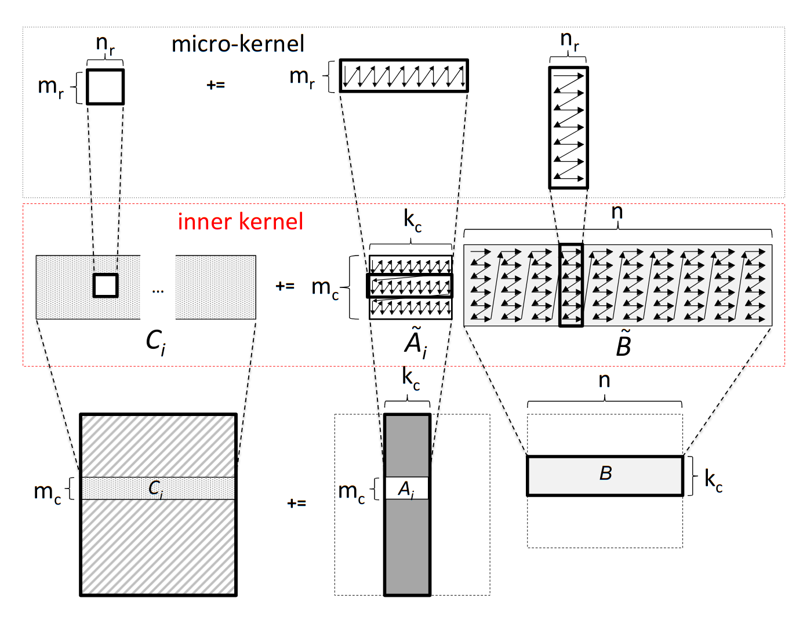
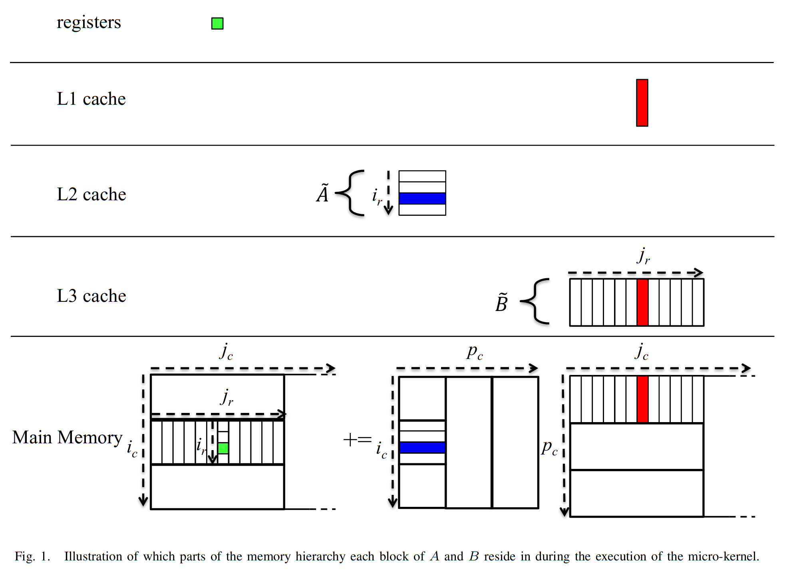

#pragma omp parallel
{
for (size_t rep=0; rep<args.repetitions; rep++) {
#pragma omp for
for (size_t i=0; i<args.array_len; i++)
y[i] += 3.14 * x[i];
}
}
for (size_t rep=0; rep<args.repetitions; rep++) {
#pragma omp parallel for
for (size_t i=0; i<args.array_len; i++)
y[i] += 3.14 * x[i];
}
! make CFLAGS='-O3 -march=native -fopenmp -Wall' -B omp-test
cc -O3 -march=native -fopenmp -Wall omp-test.c -o omp-test
! ./omp-test -r 10000
omp for : 0.770512 ticks per entry
omp parallel for: 1.576261 ticks per entry
omp for : 0.419312 ticks per entry
omp parallel for: 1.475976 ticks per entry
omp for : 0.426896 ticks per entry
omp parallel for: 1.021856 ticks per entry
omp for : 0.494572 ticks per entry
omp parallel for: 1.270378 ticks per entry
omp for : 0.444213 ticks per entry
omp parallel for: 1.009316 ticks per entry
omp for : 0.579121 ticks per entry
omp parallel for: 1.024148 ticks per entry
omp for : 0.531494 ticks per entry
omp parallel for: 1.174585 ticks per entry
omp for : 0.442223 ticks per entry
omp parallel for: 1.147614 ticks per entry
omp for : 0.446249 ticks per entry
omp parallel for: 1.084162 ticks per entry
omp for : 0.576802 ticks per entry
omp parallel for: 1.325817 ticks per entry
Matrix-matrix multiply
Start local


Further reading
- http://www.cs.utexas.edu/users/flame/pubs/blis2_toms_rev3.pdf
http://www.cs.utexas.edu/users/flame/pubs/blis3_ipdps14.pdf
%matplotlib inline import numpy as np import matplotlib.pyplot as plt plt.style.use('seaborn')
Orthogonalization and QR factorization
Given a collection of vectors (columns of a matrix), we can find an orthogonal basis by applying the above procedure one column at a time and saving the result. Let’s think of the first two columns, $$ \Bigg[ a_0 \, \Bigg| \, a_1 \Bigg] = \Bigg[ q_0 \,\Bigg|\, q1 \Bigg] \begin{bmatrix} r{00} & r{01} \ 0 & r{11} \end{bmatrix} . $$
Column 0
The equation for column 0 reads $$ a_0 = q0 r{00} $$ and we require that $\lVert q0 \rVert = 1$, thus $$ r{00} = \lVert a_0 \rVert $$ and $$ q_0 = a0 / r{00} . $$
Column 1
This equation reads $$ a_1 = q0 r{01} + q1 r{11} $$ where $a_1$ and $q_0$ are known and we will require that $q_0^T q_1 = 0$. We can find the part of $a_1$ that is orthogonal to $q_0$ via $$ (I - q_0 q_0^T) a_1 = a_1 - q_0 \underbrace{q_0^T a1}{r_{01}} $$ leaving a sub-problem equivalent to that of column 0.
def gram_schmidt_naive(A):
"""Compute a QR factorization of A using the Gram-Schmidt algorithm"""
Q = np.zeros_like(A)
R = np.zeros((A.shape[1], A.shape[1]))
for i in range(len(Q.T)):
v = A[:,i].copy()
for j in range(i):
r = Q[:,j] @ v
R[j,i] = r
v -= Q[:,j] * r # "modified Gram-Schmidt"
R[i,i] = np.linalg.norm(v)
Q[:,i] = v / R[i,i]
return Q, R
x = np.linspace(-1, 1)
A = np.vander(x, 4, increasing=True)
Q, R = gram_schmidt_naive(A)
print(Q.T @ Q)
print(np.linalg.norm(Q @ R - A))
plt.plot(x, Q);
[[ 1.00000000e+00 2.06727448e-17 -7.22457952e-17 -2.05232865e-16]
[ 2.06727448e-17 1.00000000e+00 1.13635722e-16 -5.08904737e-16]
[-7.22457952e-17 1.13635722e-16 1.00000000e+00 4.66276733e-17]
[-2.05232865e-16 -5.08904737e-16 4.66276733e-17 1.00000000e+00]]
4.744563050812836e-16

Theorem: all full-rank $m\times n$ matrices ($m \ge n$) have a unique $Q R$ factorization with $R_{j,j} > 0$.
m = 20
V = np.vander(np.linspace(-1,1,m), increasing=True)
Q, R = gram_schmidt_naive(V)
def qr_test(qr, V):
Q, R = qr(V)
m = len(Q.T)
print('{:20} {:.2e} {:.2e}'.format(
qr.__name__,
np.linalg.norm(Q @ R - V),
np.linalg.norm(Q.T @ Q - np.eye(m))))
qr_test(gram_schmidt_naive, V)
qr_test(np.linalg.qr, V)
gram_schmidt_naive 9.52e-16 3.04e-09
qr 2.74e-15 2.39e-15
Left-looking algorithms: reducing the number of inner products
def gram_schmidt_classical(A):
Q = np.zeros_like(A)
R = np.zeros((len(A.T),len(A.T)))
for i in range(len(Q.T)):
v = A[:,i].copy()
R[:i,i] = Q[:,:i].T @ v
v -= Q[:,:i] @ R[:i,i]
R[i,i] = np.linalg.norm(v)
Q[:,i] = v / R[i,i]
return Q, R
qr_test(gram_schmidt_classical, V)
gram_schmidt_classical 9.14e-16 1.42e+00
Classical Gram-Schmidt is highly parallel, but unstable, as evidenced by the lack of orthogonality in $Q$.
Right-looking algorithms
The implementations above have been “left-looking”; when working on column $i$, we compare it only to columns to the left (i.e., $j < i$). We can reorder the algorithm to look to the right by projecting $q_i$ out of all columns $j > i$. This algorithm is stable while being just as parallel as gram_schmidt_classical.
def gram_schmidt_modified(A):
Q = A.copy()
R = np.zeros((len(A.T), len(A.T)))
for i in range(len(Q.T)):
R[i,i] = np.linalg.norm(Q[:,i])
Q[:,i] /= R[i,i]
R[i,i+1:] = Q[:,i].T @ Q[:,i+1:]
Q[:,i+1:] -= np.outer(Q[:,i], R[i,i+1:])
return Q, R
qr_test(gram_schmidt_modified, V)
gram_schmidt_modified 8.32e-16 1.32e-08
One reduction: Cholesky QR
def chol_qr(A):
import scipy.linalg as la
B = A.T @ A
R = la.cholesky(B)
Q = A @ la.inv(R)
return Q, R
qr_test(chol_qr, V)
chol_qr 8.12e-15 1.07e-01
def chol_qr2(A):
import scipy.linalg as la
B = A.T @ A
R = la.cholesky(B)
Q = A @ la.inv(R)
R2 = la.cholesky(Q.T @ Q)
Q = Q @ la.inv(R2)
R = R2 @ R
return Q, R
qr_test(chol_qr2, V)
chol_qr2 8.36e-15 1.29e-15